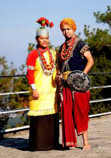

Meghalaya's cuisine is liberal, surprising and tinted with influences of the tribal cultures and styles in the area. The food is simple and mild, but an almost staple dash of spice and unique ingredients makes the platter of Meghalaya standout from the rest. Rice with spicy meat and fish preparations is the staple food of people in Meghalaya.
Ferment rice beer usually accompanies religious rites and major ceremonies and celebrations. Dohshaiin, Tungtab, Red rice, Jodoh, Dohneiihong, Makham-Bitchi and Kappa are the delicacies that are almost constant in a traditional and authentic to Meghalayan cuisine. So are the vegetarian options of Jhur Sideh, Daineiiong, and Muli Khleh.
The Khasi is also called Jainse or Dhara. This style of attire is worn by women and is paired with heavy silver accessories. They wear a cylindrical lower waistcloth and cover up with a bright yellow shawl. Men wear loincloth with a jacket. Turban or any headgear is common.